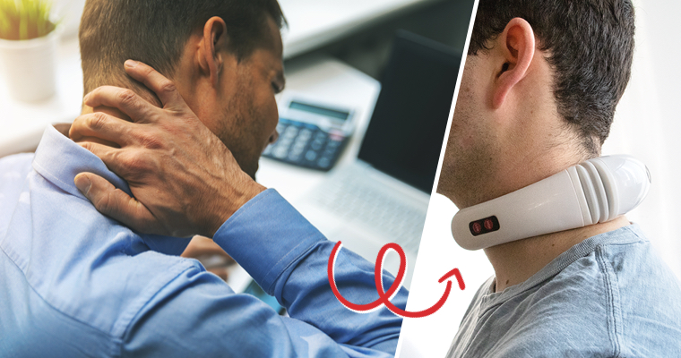

What to Do When the Everyday Grind Becomes a Pain
Feb 27, 2020 at 10:32am EDT | Sponsored by NeckRelax

I’ve spent the last 15 years working in accounts payable. I was recently offered a management role. Call me naïve, but I never realized supervising the performance of others could be so stressful. Adding to that, I spent hours a day at my desk, hunched over my screen, staring at numbers all week, even staying overtime during the busy season.
Four years ago, my wife and I had our first child. To this day, that little rascal keeps us on our toes. And the next one is due to arrive in a few months.
About two years ago, I accidentally stumbled into doing some bookkeeping work as an enjoyable little side gig. A buddy started up his own craft brewing business and I wanted to make sure he did things properly. Word got around, and I ended up getting a few more clients out of it. It was nice having a bit of extra cash coming in. And what can I say, I like free beer.
Unfortunately, the stress of balancing everything started to creep up on me.
Neck Soreness Made Life UNBEARABLE
Suddenly I was waking up feeling headachy and sore. Computer work was becoming a hardship. My neck and back were always killing me.
I went and saw a doctor hoping he could explain what was causing the crick in my neck. He told me it could be a bunch of things.
Not exactly helpful.
He prescribed some pills for the muscle spasms which helped a little, but I never did shake all the symptoms I was experiencing.
My wife suggested I get a massage, but the idea of someone I didn’t know rubbing my neck didn’t really appeal. The same thing goes for having a chiropractor go to town on my neck and spine.
I even tried one of those vibrating back massagers, but it was more of a distraction than a fix.
When your neck is sore, everything suffers because of it. The workload I once enjoyed was becoming more of a chore. Even playing with my son was becoming a strain. I finally had to tell him he couldn’t ride on daddy’s shoulders anymore.
That little crick in my neck was suddenly a big deal.
It really hit me how I couldn't really play with my son like I used to, but funny enough, the next day, I met an interesting guy who worked at one of the Brew Pubs. It turned out he had studied human anatomy in college, and he mentioned how sitting at my desk all day for the past 15 years was not the most ideal position for my body.
He suggested I try a neck massager. Not just any neck massager, the NeckRelax! It was the name of a product he swore by.
A Quick Fix for Bad Days: Discovering NeckRelax Magic
For the amount it cost, I was willing to give this NeckRelax device a try.
My NeckRelax arrived within a few days. When I took it out of the box, it looked like an expensive pair of headphones.
I popped in the batteries (2 x AAA) and wrapped it around my neck. It was comfortable even before turning it on.
I pushed the on button just to try it out.
It felt warm, relaxing, and deeply gratifying.
After a few minutes, it felt like the cold ball of tension at the base of my neck was melting away. The sensation seemed to run down the edge of my spine. Exactly what I needed at that moment.
Quick and Easy Pain Relief… On a Budget
The next day after work, I decided to give the NeckRelax another test as my back was killing me.
Unlike some gadgets on the market, NeckRelax doesn’t rely on any gimmicky moving parts. Once the NeckRelax is comfortably in position, you don’t have to do a thing. Just click it on and choose a setting. No more holding onto vibrating gadgets. NeckRelax does all the work for you with its three modalities:
1 Infrared Heat: This method of pain relief penetrates deep into the tissues for a thoroughly satisfying massage that also improves your circulation.

2 Therapeutic Ultrasound: A non-invasive treatment that uses high-frequency vibrations to stimulate healing. Perfect for anyone with sports injuries.
3 Electro Frequency Stimulation Massage Therapy (EFSMT): With the purchase of your new NeckRelax, you also receive a set of electrode pads (along with the connecting cord) for targeting specific muscles for pain relief.
-
For a device that delivers such a powerful deep tissue massage, the NeckRelax is incredibly gentle. I’ve almost fallen asleep while using it. It features 6 distinct massage modes and you can choose the intensity level that works best for you or the mode that best suits the day!
And compared to some of the other massagers on the market, the price was great! I loved how much better value this was— it was everything I could have asked for in a massager, and more, but for less!
The Benefits of Having Your Own Personal Massage Device
Once the NeckRelax became a part of my daily routine, I was able to eliminate the neck strain that had been bothering me for months. If I felt any pain coming on, I knew I could relieve it with the push of a button.
Thanks to the smart, compact design, I’ve started using the NeckRelax practically everywhere. Rush hour traffic doesn’t seem so bad with a NeckRelax in the car. I even wear it at work sometimes. Perfect for those long days at the office.
My work days are now more relaxed and pain-free, all thanks to the amazing NeckRelax. And after work? It’s nice to know that I’ll be able to carry my son on my shoulders again (and soon, his little brother too!).
If you’re in need of personal repair, you have to check out this link. NeckRelax is currently being offered at a special price, but only for a limited time, and with how word’s getting around (people at my office and my friend’s business have been asking me for weeks!), you never know when they might sell out!